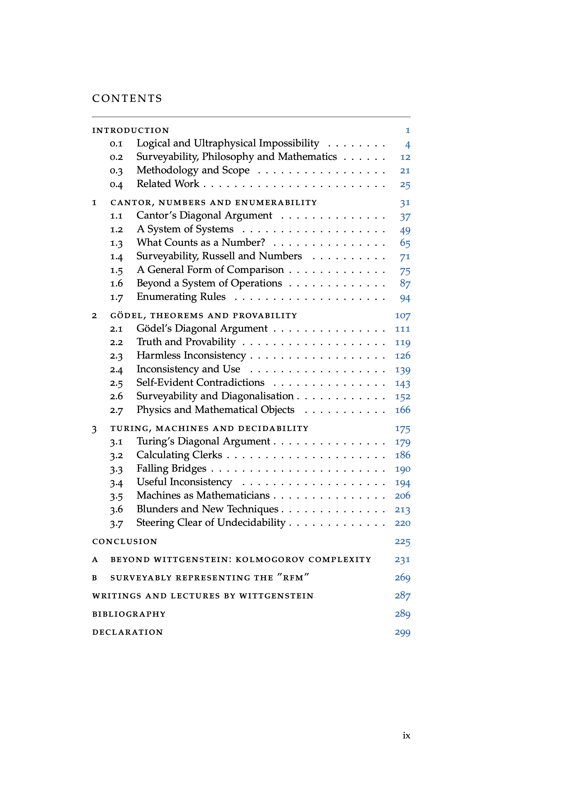
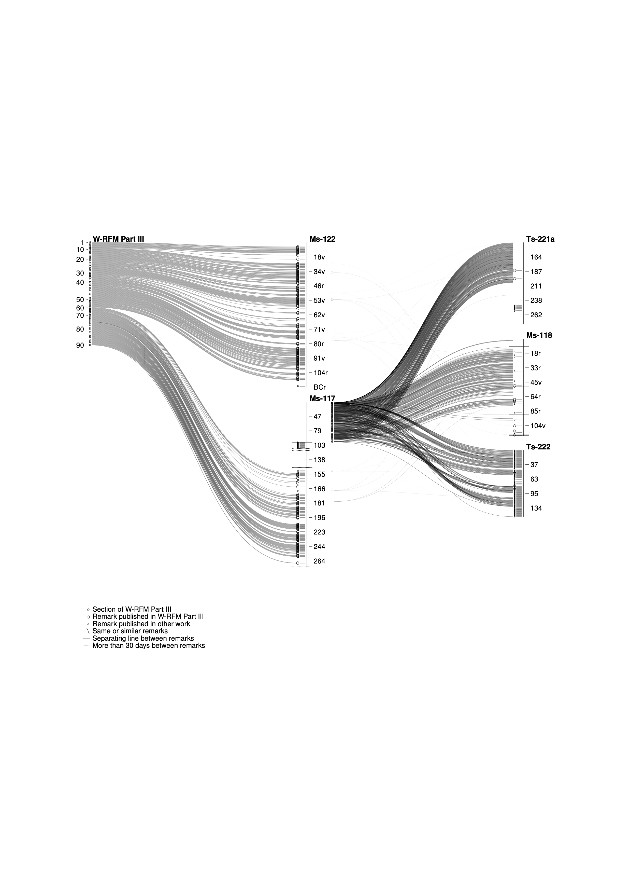
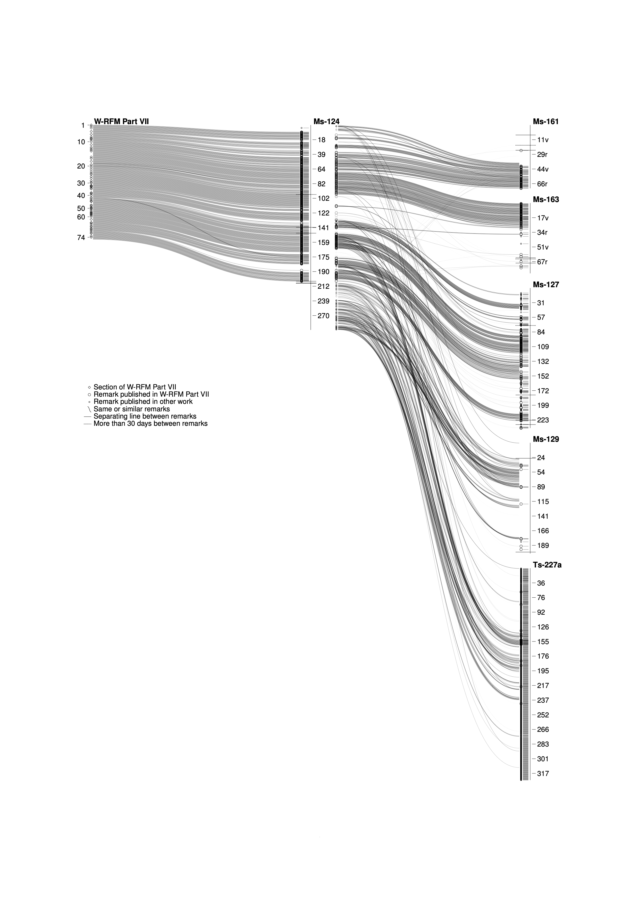

Projects
2022
From 2019 to 2022, I wrote my PhD dissertation on the philosophy of Ludwig Wittgenstein, specifically about his remarks on the three diagonal arguments by Cantor, Gödel and Turing and how common interpretations make their proofs appear “ultraphysical”, which leads to philosophical confusions. Since the various diagonal arguments are fundamental for logic and computer science, philosophical misinterpretations shape how we understand the foundations of computation.
The dissertation is Open Access, here's the pdf.
The diagonal arguments by Cantor, Gödel and Turing constitute fundamental results that demonstrate limits to what is mathematically possible. These results can easily appear to us as limits that must hold, as if they were laws of nature that govern the ideal world of platonic numbers and logic, giving them an “ultraphysical” appearance of rigidity and hardness.
In all three cases, Wittgenstein critically examines the formal ideal of consistency and points out that the conclusions of the diagonal arguments only seem inevitable if we are not prepared to accept the contradictory result of the diagonalisation as an object in the formal system.
Wittgenstein’s intent is not to advocate for a trivialist or paraconsistent treatment of inconsistency, since such an interpretation of the mathematical results would be just as dogmatic and philosophically one-sided as the interpretations that Wittgenstein is critically examining. From his perspective, consistency is not an ideal in and of itself, but merely a principle that has proven itself so useful in a large variety of language games that we accept it as an unquestioned rule even in cases where the situation is radically different.
In Wittgenstein’s philosophy of mathematics, the actual language games that might appear to act only as examples or as motivation for their later formalisation are not merely primitive secondary stimuli for the primary formal system, they are instead essential for an understanding of the formal system to begin with, because the actual language games in all their variety lead to a surveyable representation of our concepts in a way that does not reveal itself by merely considering the uniform treatment in the formal system.
Wittgenstein’s investigation of the three diagonal arguments shows what is at stake in these particular proofs: Although the mathematical proofs themselves are perfectly valid, we have the tendency to interpret them not as merely demonstrating logical impossibilities, but as “ultraphysical” impossibilities, comparable to laws of nature, governing the ideal realm of mathematics. Such a misleading picture is the result of a “one-sided diet”, because we lack surveyability: We fail to grasp the concepts in all their various uses and in the context of how they fit into our form of life. The antidote is to describe them in a surveyable representation, sometimes by imagining different forms of life.
The dissertation also contains visualizations of how the posthumously published Remarks on the Foundations of Mathematics is related to the various source documents in Wittgenstein's Nachlass (more details here).
 